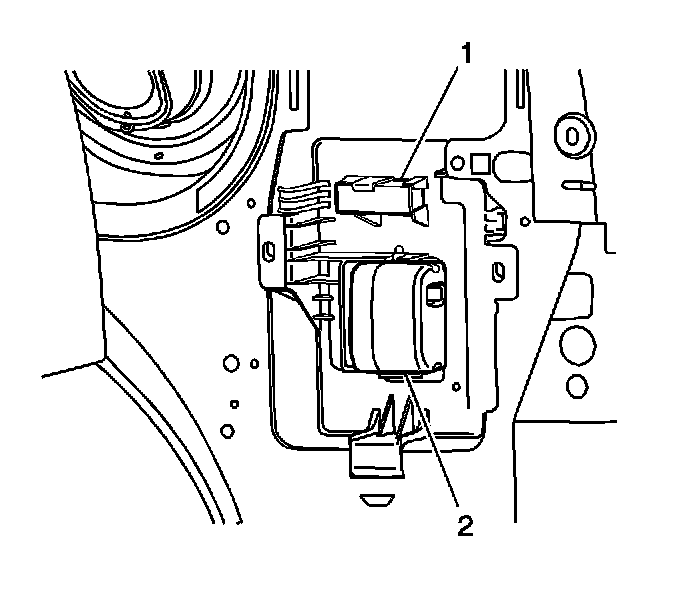

Alarm Horn: Service and Repair
Theft Deterrent Alarm Replacement
Removal Procedure
1. Remove the right side body side panel trim. Refer to Body Side Rear Trim Panel Replacement (w/TB5) (Service and Repair)Body Side Rear Trim Panel Replacement (w/o TB5) (Service and Repair) .

2. Disconnect the electrical connector on the alarm module (2).
Remove the alarm module from the bracket.
Installation Procedure
1. Install the alarm (2) to the bracket.
2. Connect the electrical connector.
3. Install the right side body side panel trim. Refer to Body Side Rear Trim Panel Replacement (w/TB5) (Service and Repair)Body Side Rear Trim Panel Replacement (w/o TB5) (Service and Repair) .